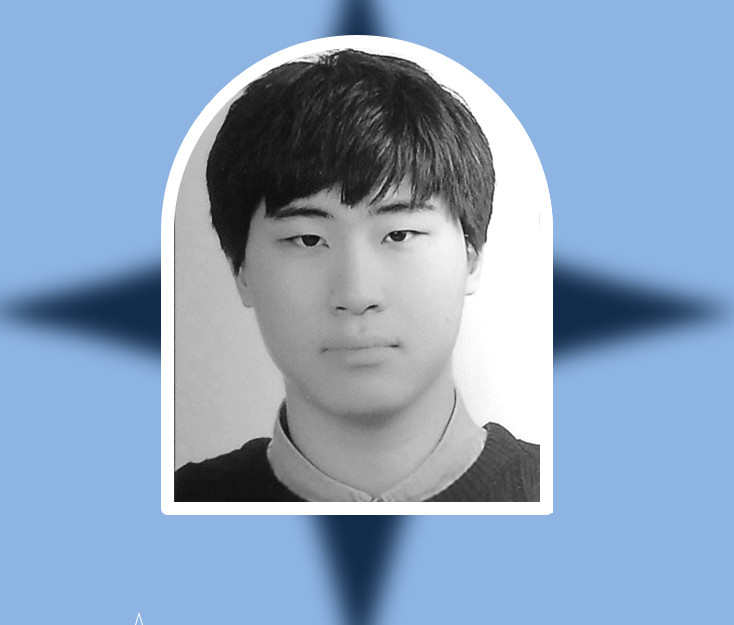

About Me
우병설
1998.08.03
충청북도 청주시
CONTACT
010-8581-8160
이메일: b3303923@gmail.com
EXPERIENCE
2017 운전면혀증 1종 보통
2018 컴퓨터활용능력 2급
2023 청주 대학교 졸업
2023 TOIEC 650
PERSONALITY
MBIT : 실용적인 조력가, 보호형 (ISFJ)
Excel
Word
Powerpoint
Photoshop
메인
프로젝트